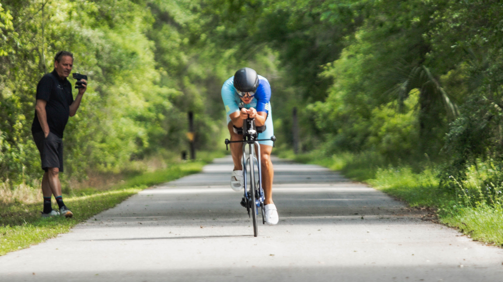

Professional Triathlete

Recap of CapTex Tri in Austin Texas. It was a super hot day, I kept my effort low in the swim and came out in 3rd place. I was 1 minute down going into the bike and took over the lead after the 1st of 4 laps. I grew my lead to well over a minute by the time I hit the run. Knowing the heat was having an effect on all competitors, I pushed just enough to discourage anyone from believing that they could catch me. The last few kilometers felt like a victory lap, although the heat made it somewhat hard to enjoy it.
PHOTO SHOOT AND GEAR TESTING WITH ROCKET SCIENCE SPORTS

AERO TESTING WITH KU CYCLE
1st Phorm is a company built with the sole purpose of helping anyone with a desire to better their own health and well-being. Being given the opportunity to become a Legionnaire has helped me in my own pursuit of athletic greatness. The leaders and educators at 1st Phorm have also helped in educating me on the importances of certain supplements and recovery specific nutrtition. I've linked my favorite recovery mix to the their logo to the left and I strongly encourage anyone to try it out. If you feel somewhat confused or unsure about taking supplements for general health or athletic performance, or you've wanted to up your game in terms of pre/during/post workout fuel, feel free to send me an email. If I can't help you, I'll get you in contact with someone who can.
From engineering to the exhilarating world of triathlons, my journey embodies the fusion of determination and passion. In 2022, I took a leap of faith and joined a full-time professional triathlon team, fueled by grand aspirations and an unwavering commitment to conquer new horizons. I finished that year with an amateur podium at 70.3 Waco in 2022, igniting a fire within me to push harder and strive for excellence. The thrill of competition propelled me to secure another amateur podium at 70.3 Oregon the following year, despite a collarbone break in January. With the injury, the only other performance to note was a top 10 finish at 70.3 Augusta, concluding a season filled with both trials and triumphs. Even amid the adversity of a brief battle with Covid leading into the 2024 season, I remained steadfast in my pursuit of greatness. As the off-season unfolded, I immersed myself in rigorous training, eagerly anticipating the promising career that lies ahead. With each swim stroke, pedal, and stride, I am poised to embrace the challenges and victories that await, forging a path defined by resilience, perseverance, and an undying love for the sport.